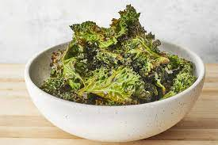

Preheat an oven to 300 degrees F (150 degrees C). Line a rimmed baking sheet
with parchment paper.
With a knife or kitchen shears carefully remove kale leaves from the thick stems
and tear into bite size pieces.